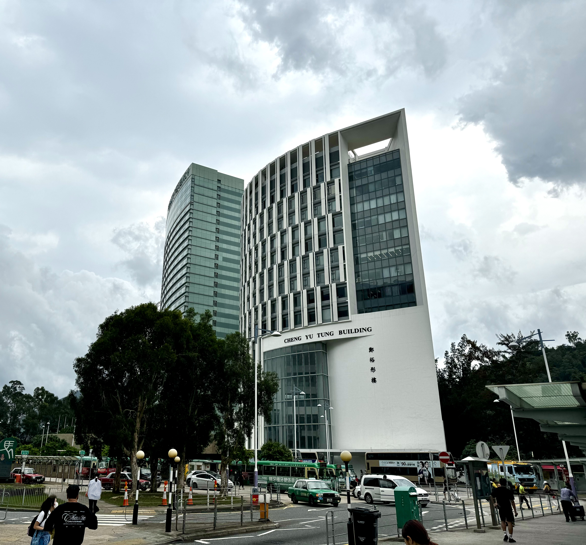

In recent years, multimodal large models and World Models have witnessed rapid advancements. Among them, World Models—with their ability to infer physical laws and predict dynamic environments—are widely regarded as a critical technological pathway toward Physical AI and embodied intelligence.
While current research routes on World Models are diverse and flourishing, human cognition suggests that our deep understanding of and interaction with the environment largely stem from the continuous input and perceptual accumulation of multimodal information, particularly vision. Consequently, computer vision (CV) and multimodal technologies play a vital role in the construction and evolution of World Models.
For this symposium, we have invited academic experts from various research directions to focus on and discuss the interplay among computer vision, spatial intelligence, and World Models.
You are welcome to join our symposium.
Venue 1: Room CYT LT1B, Cheng Yu Tung Building, CUHK
Venue 2: Room CYT 214, Cheng Yu Tung Building, CUHK
| August 15 (Morning Session) | |
| 9:00 - 9:15 | Welcome and Opening Speech |
| 9:15 - 10:00 | Keynote: David Forsyth (UIUC) |
| 10:05 - 10:35 | Topic: Jiajun Wu (Stanford) |
| 10:40 - 11:10 | Topic: Xiaojuan Qi (HKU) |
| 11:15 - 11:45 | Topic: Speaker |
| August 15 (Afternoon Session) | |
| 14:00 - 14:45 | Keynote: Xiaoming Liu (UNC) |
| 14:50 - 15:20 | Topic: Alex Schwing (UIUC) |
| 15:25 - 15:55 | Topic: Jiajun Zhang (UCAS) |
| 16:00 - 16:30 | Topic: Xinggang Wang (HUST) |
| 16:35 - 17:05 | Topic: Speaker |
| 17:10 - 18:00 | Panel Discussion |
| August 16 (Morning Session) | |
| 9:00 - 9:45 | Keynote: Mohit Bansal (UNC) |
| 9:50 - 10:20 | Topic: Mengye Ren (NYU) |
| 10:25 - 10:55 | Topic: Bolei Zhou (UCLA) |
| 11:00 - 11:30 | Topic: Qifeng Chen (HKUST) |
| August 16 (Afternoon Session) | |
| 14:00 - 14:45 | Keynote: Zhuowen Tu (UCSD) |
| 14:50 - 15:20 | Topic: Qi Dou (CUHK) |
| 15:25 - 15:55 | Topic: Fei Miao (ZJU) |
| 16:00 - 16:30 | Topic: Speaker |
| 16:35 - 17:05 | Topic: Liwei Wang (CUHK) |
| 17:10 - 18:00 | Panel Discussion |
| 18:00 - 18:15 | Closing Remarks |
The Cheng Yu Tung Building (鄭裕彤樓) is located right next to the University MTR Station and Hyatt Hotel, outside of the CUHK campus. No campus pass is needed to access the building.
From University Station:
Exit via University MTR Station Exit B, follow the walkway on your right to enter the Cheng Yu Tung Building.
From Hyatt Hotel:
Go to the Ground floor (one level down from the hotel Lobby), walk across the parking lot, and follow the walkway on your left to enter the Cheng Yu Tung Building.
